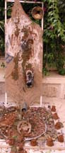

by Samia A. Halaby
Thus it was that my teaching concerning creativity in art was being conducted among townspeople suffering the severe effects of a merciless siege. Palestinians are resisting this Israeli terrorism by trying to continue conducting life as fully as possible. The intention of my teaching was to encourage self-reliance in artistic decision making, to encourage intuitiveness, and to encourage innovation in the selection of art materials. The project was posted in advance on the web. The advance response to my posting was very moving and indicative of the devastation of the siege. The organizers in BeitLahem begged me to post illustrative pictures as they did not have sufficient library material for the students to understand the context of the project. Please read the Project for BeitLahem and associated Project Pictures I and Project Pictures II which I posted in response. Below is the amazing group of Palestinians going to dinner together to toast our collaboration. They treated me to the specialties of Abu Shanab restaurant. I am proud of their heroic Soumoud and both honored by and grateful for their beautiful hospitality.
The artworks resulting were of high quality considering that we had only four consecutive days to work together. I was truly impressed by their sincerity and trust. For the youths among them, it was difficult to abandon the habit of fulfilling expectations. Yet in spite of varying degrees of acceptance, each and every participant made giant steps forward.

Firas Salman, "Forms of Art," 2003. Mixed media, 40 x 100 cm.
The youngest student was Firas Salman, 13 years of age, who worked a batch of found objects from around his home into a three dimensional assemblage -- a miniature theatre-like setting. He worked quietly, confidently, consistently, absorbed and happy. I am satisfied that he experienced something important and was glad that he shared it with the rest of us.
Ali Khalid Qaraqe, untitled, 2003. Collage, 29 x 41 cm.
Next in age was Ali Khalid Qaraqa, age 14, who proudly introduced himself as Artist Ali. I admire his confidence and hope that no one robs him of it too soon. As a young Palestinian male from Dheishe refugee camp, he is a primary target of Israeli State terror. Ali was the busy young man who had an important installation to create for an art opening during one of the nights of our session. During the little time he gave our project, he created a collage of parts cut out of magazines and calendars. The abstraction of his work was less his pleasure as an artist and more his trust in my urging him to experiment. He understood quickly how to proceed and understood that the picture plane did not need to be a hard rectangle.
Rawan Gedeon, "Life," 2003. Papier Mache with mixed media, 20 x 10 cm.
Rawan Gedeon, 15 years, was also very busy preparing a video installation for the same exhibition as Ali. And indeed, her video memorializing her brother was incredibly mature and powerful. The work she did for our project was a papier mache assemblage with grapevine leaves. The sweet tenderness of the work presented in the picture above is wonderful.
Johnie Andonia, "Beginning of Creation," 2003. Stone with mixed media construction, 20 x 20 x 10 cm.
Johnie Andonia is very young for the extent of experience he has had as a painter. He is of a line of icon painters who are part of the history of BeitLahem. Johnie found it hard to abandon extensive experience and to travel with me in experimenting with process and found objects. I tried to give him a way out but he refused my offer and forged ahead. He brought bits of stones that are remnants from his place of work and he assembled them together into the work shown below.
Johnie andonia, untitled, 2003. Crayon on paper, 17 x 30 cm.
Johnie was delighted with his own break-through. I then encouraged him to try the same process not with assembled objects but with assembled images. The drawing of an eye presented below was among some of his experiments which he did not present to me. I found it after he left. Studying it one finds an impressive and mature combination of images which create a message larger than the mere combination of parts. The metaphor of the barbed wire for eye lashes which hurts and creates tears of blood is poignant and artistically mature. In Palestinian art, the eye as symbol of awareness is here used to express both suffering and knowledge of who imposes this suffering.

Tamer Mounir Mousa, "Abstraction in color and cloth," 2003. Mixed media 110 x 70 x 35 cm.
Tamer Mounir Mousa is also very young and just beginning to make art and to experiment. He is completely open to the ideas of the project and intuited immediately how to proceed. He gathered his materials quickly and spent the greater amount of time exploring these materials and resulting forms. In the end a beautiful piece with many allusions was created. It had the syntax of a window with objects on the window sill, or an alter with offerings, or a picnic on the stoop of a doorway. Tamer has wings wide open waiting for the wind to rise that he might fly.

Monther Jawabrah, "Siege," 2003. Mixed media, 180 x 150 x 190 cm.
Monther Jawabrah was a practicing and mature artist who created a piece with great freedom and gusto. He collected some of the abandoned shoes he said are found everywhere. They brought with them implications of Palestinians crossing Israeli closure points. Monther put some frames, chicken wire, mud, sack cloth, mud pies, shoes, and a discarded speaker together to create his piece. The crossing of the frames speaks clearly of Israeli imposed closure points. On the vertical path are shoes marching through the mud across a horizontal pathway where mud pies symbolize the cement road blocks Israelis place in the way. At the top right corner is the rusted speaker. All the participating artists immediately recognized the symbolism of the piece and associated the speaker with the hateful voices of Israeli soldiers yelling orders in their accented broken Arabic.

Ramaz Al Araje, "Mixed life: Solid, Living, and Dead" 2003. Stones, egg, and weeds, 40 x 25 x 20 cm.
Ramaz Al Araje teaches art at Terra Santa and Freres schools. Ramaz created several assemblage sculptures. The most powerful was the one where extremely fragile things are nested in extremely hard things. Stones and eggs in combination are so unexpected that one immediately feels the metaphoric allusion to the fragile condition of Palestinians under Israeli military terror. At the same time there is a palpable reaction to the work in our urge to protect what is fragile. This work and several other he made are unusual within the context of his work. Clearly, he put his trust in learning something outside his habits and created wonderful beginnings.

Nadira AlAraj, "Recess Time" 2003. Mixed media, 50 x 35 x 10 cm.
Nadira AlAraj is professor of operations management at Bethlehem University. She joined the course during a time of great pressure in her life. In addition to the difficulties created by the seige, it was exam week at her university. But it was relaxing, she said, amidst all the pressure to respond intuitively to the physical manipulation of found object and to follow the ideas they provoked in her. The experience began to suggest play and recess time. The resulting artwork is light hearted yet powerful. I look at the piece and it tells me of the delight of moving when still a child, of shapes freshly born, of flowers just after budding, of leaves in the spring, of skies and grass, and places of safety. It is a wonderful, beautiful work and I hope that she will sign and date it and take good care of it.
Samar Ghattas, work in progress, 2003. Mixed media, 20 x 30 cm.
Samar Ghattas is professor of art at Bethlehem University. Like Nadira, Samar also had the pressure of exam week as she spent four days with us. A mature artist with college teaching and exhibition experience, Samar was willing to share her time with us and committed herself to try something she has not done before. During each of the first three days she assembled different materials into a piece that could have been complete in itself. Then during the final hours she put all the parts together with the determination of one who might either sink or swim. The intellectual effort was greater than at the earlier stages.
Samar Ghattas "Soft Roughness" 2003. mixed media, 60 x 60 cm.
Courage paid off; Ghattas swam. The resulting artwork was very much in her own mature style, yet possessed fertile promise of new directions. It seems like a great beginning where creative intuition is telegraphing through to the viewer.
I extend my thanks to Faten Nastas Mitwasi, Art Coordinator at DAR ANNADWA ADUWALIYA, the International Center of Bethlehem, for her invaluable coordination of the project and to all those working with her. I extend my thanks to nine wonderful students who moved me in their heroic resistance to the ill effects of siege in BeitLahem. I hope to be able to spend time with them again and hope that the circumstances might be less difficult.
="pointer-events:none;cursor:default;" href="http://www.art.net/">
![[Art on the Net]](/images/artnet_button.gif)